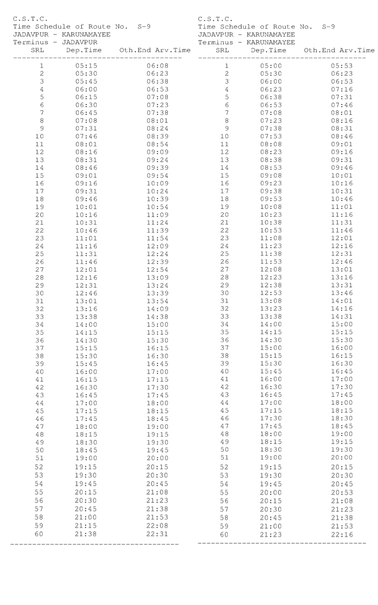

S-9 Kolkata City Bus Timetable
JADAVPUR → KARUNAMAYEE and reverse direction departure and terminal arrival times.
JADAVPUR KARUNAMAYEE
| # | Departure | Arrival | Ride |
|---|---|---|---|
| 1 | 5:15 AM | 6:08 AM | 53m |
| 2 | 5:30 AM | 6:23 AM | 53m |
| 3 | 5:45 AM | 6:38 AM | 53m |
| 4 | 6:00 AM | 6:53 AM | 53m |
| 5 | 6:15 AM | 7:08 AM | 53m |
| 6 | 6:30 AM | 7:38 AM | 1h 08m |
| 7 | 7:45 AM | 8:01 AM | 16m |
| 8 | 7:08 AM | 8:24 AM | 1h 16m |
| 9 | 7:31 AM | 8:39 AM | 1h 08m |
| 10 | 7:46 AM | 8:54 AM | 1h 08m |
| 11 | 8:01 AM | 9:09 AM | 1h 08m |
| 12 | 8:16 AM | 9:39 AM | 1h 23m |
| 13 | 8:31 AM | 9:54 AM | 1h 23m |
| 14 | 8:46 AM | 10:09 AM | 1h 23m |
| 15 | 9:01 AM | 10:21 AM | 1h 20m |
| 16 | 9:16 AM | 10:39 AM | 1h 23m |
| 17 | 9:31 AM | 10:54 AM | 1h 23m |
| 18 | 9:46 AM | 11:09 AM | 1h 23m |
| 19 | 10:01 AM | 11:24 AM | 1h 23m |
| 20 | 10:16 AM | 11:39 AM | 1h 23m |
| 21 | 10:31 AM | 11:54 AM | 1h 23m |
| 22 | 10:46 AM | 12:09 PM | 1h 23m |
| 23 | 11:10 AM | 12:24 PM | 1h 14m |
| 24 | 11:54 AM | 12:54 PM | 1h 00m |
| 25 | 12:09 PM | 1:09 PM | 1h 00m |
| 26 | 12:24 PM | 1:24 PM | 1h 00m |
| 27 | 12:39 PM | 1:54 PM | 1h 15m |
| 28 | 12:54 PM | 2:09 PM | 1h 15m |
| 29 | 1:09 PM | 2:38 PM | 1h 29m |
| 30 | 1:24 PM | 3:00 PM | 1h 36m |
| 31 | 1:39 PM | 3:15 PM | 1h 36m |
| 32 | 2:00 PM | 3:30 PM | 1h 30m |
| 33 | 2:15 PM | 3:30 PM | 1h 15m |
| 34 | 2:30 PM | 4:45 PM | 2h 15m |
| 35 | 3:15 PM | 5:00 PM | 1h 45m |
| 36 | 3:30 PM | 5:30 PM | 2h 00m |
| 37 | 4:00 PM | 5:45 PM | 1h 45m |
| 38 | 4:15 PM | 6:00 PM | 1h 45m |
| 39 | 4:30 PM | 6:15 PM | 1h 45m |
| 40 | 4:45 PM | 6:45 PM | 2h 00m |
| 41 | 5:00 PM | 7:00 PM | 2h 00m |
| 42 | 5:15 PM | 7:15 PM | 2h 00m |
| 43 | 6:45 PM | 7:30 PM | 45m |
| 44 | 6:00 PM | 7:45 PM | 1h 45m |
| 45 | 6:15 PM | 8:00 PM | 1h 45m |
| 46 | 6:30 PM | 8:15 PM | 1h 45m |
| 47 | 7:45 PM | 8:30 PM | 45m |
| 48 | 7:00 PM | 8:45 PM | 1h 45m |
| 49 | 7:15 PM | 9:08 PM | 1h 53m |
| 50 | 7:30 PM | 9:23 PM | 1h 53m |
| 51 | 7:45 PM | 9:38 PM | 1h 53m |
| 52 | 8:15 PM | 9:53 PM | 1h 38m |
| 53 | 8:30 PM | 10:08 PM | 1h 38m |
| 54 | 8:45 PM | 10:31 PM | 1h 46m |
| 55 | 9:00 PM | — | — |
| 56 | 9:15 PM | — | — |
| 57 | 9:38 PM | — | — |
This direction has 57 departure entries and 54 arrival entries in the supplied schedule image. Unmatched values are shown as — and should be checked against the original notice.
KARUNAMAYEE JADAVPUR
| # | Departure | Arrival | Ride |
|---|---|---|---|
| 1 | 5:00 AM | 5:53 AM | 53m |
| 2 | 5:30 AM | 6:23 AM | 53m |
| 3 | 6:00 AM | 6:53 AM | 53m |
| 4 | 6:23 AM | 7:16 AM | 53m |
| 5 | 6:38 AM | 7:31 AM | 53m |
| 6 | 6:53 AM | 7:46 AM | 53m |
| 7 | 7:08 AM | 8:01 AM | 53m |
| 8 | 7:38 AM | 8:16 AM | 38m |
| 9 | 7:53 AM | 8:31 AM | 38m |
| 10 | 8:08 AM | 8:46 AM | 38m |
| 11 | 8:23 AM | 9:01 AM | 38m |
| 12 | 8:38 AM | 9:16 AM | 38m |
| 13 | 8:53 AM | 9:31 AM | 38m |
| 14 | 9:08 AM | 9:46 AM | 38m |
| 15 | 9:23 AM | 10:16 AM | 53m |
| 16 | 9:53 AM | 10:31 AM | 38m |
| 17 | 10:08 AM | 10:46 AM | 38m |
| 18 | 10:23 AM | 11:01 AM | 38m |
| 19 | 10:38 AM | 11:16 AM | 38m |
| 20 | 10:53 AM | 11:31 AM | 38m |
| 21 | 11:08 AM | 11:46 AM | 38m |
| 22 | 11:23 AM | 12:01 PM | 38m |
| 23 | 11:38 AM | 12:16 PM | 38m |
| 24 | 11:53 AM | 12:31 PM | 38m |
| 25 | 12:08 PM | 12:46 PM | 38m |
| 26 | 12:23 PM | 1:01 PM | 38m |
| 27 | 12:38 PM | 1:16 PM | 38m |
| 28 | 12:53 PM | 1:31 PM | 38m |
| 29 | 1:08 PM | 1:46 PM | 38m |
| 30 | 1:23 PM | 2:01 PM | 38m |
| 31 | 1:38 PM | 2:16 PM | 38m |
| 32 | 2:00 PM | 2:31 PM | 31m |
| 33 | 2:15 PM | 3:00 PM | 45m |
| 34 | 2:30 PM | 3:15 PM | 45m |
| 35 | 3:15 PM | 3:30 PM | 15m |
| 36 | 3:30 PM | 3:30 PM | 0m |
| 37 | 3:45 PM | 4:00 PM | 15m |
| 38 | 4:00 PM | 4:15 PM | 15m |
| 39 | 4:20 PM | 4:45 PM | 25m |
| 40 | 4:45 PM | 5:00 PM | 15m |
| 41 | 5:00 PM | 5:30 PM | 30m |
| 42 | 5:15 PM | 5:45 PM | 30m |
| 43 | 5:30 PM | 6:00 PM | 30m |
| 44 | 5:45 PM | 6:15 PM | 30m |
| 45 | 6:15 PM | 6:30 PM | 15m |
| 46 | 6:30 PM | 6:45 PM | 15m |
| 47 | 6:45 PM | 7:00 PM | 15m |
| 48 | 7:00 PM | 7:15 PM | 15m |
| 49 | 7:15 PM | 7:30 PM | 15m |
| 50 | 7:30 PM | 7:45 PM | 15m |
| 51 | 7:45 PM | 8:00 PM | 15m |
| 52 | 8:00 PM | 8:15 PM | 15m |
| 53 | 8:15 PM | 8:30 PM | 15m |
| 54 | 8:30 PM | 8:45 PM | 15m |
| 55 | 8:45 PM | 9:08 PM | 23m |
| 56 | 9:00 PM | 9:23 PM | 23m |
| 57 | 9:23 PM | 9:38 PM | 15m |
| 58 | — | 9:53 PM | — |
| 59 | — | 10:16 PM | — |
This direction has 57 departure entries and 59 arrival entries in the supplied schedule image. Unmatched values are shown as — and should be checked against the original notice.
Official schedule source
Source: West Bengal Transport Department / CSTC timetable image supplied for this route.
Schedule data imported on 2026-10-05. Timings may change; confirm at the bus stand or with the operator before travel.
← All Kolkata city bus routes

S-9 bus timetable FAQs
What time does S-9 bus start?
The first listed departure for this route is 5:15 AM. The last listed departure in the supplied schedule is 9:23 PM.
Does this page show both directions?
Yes. This page lists the official CSTC schedule for both directions where both direction records are available.
Are these timings official?
The source supplied for this page is the CSTC/West Bengal Transport schedule image. Timings can change, so confirm before travelling.